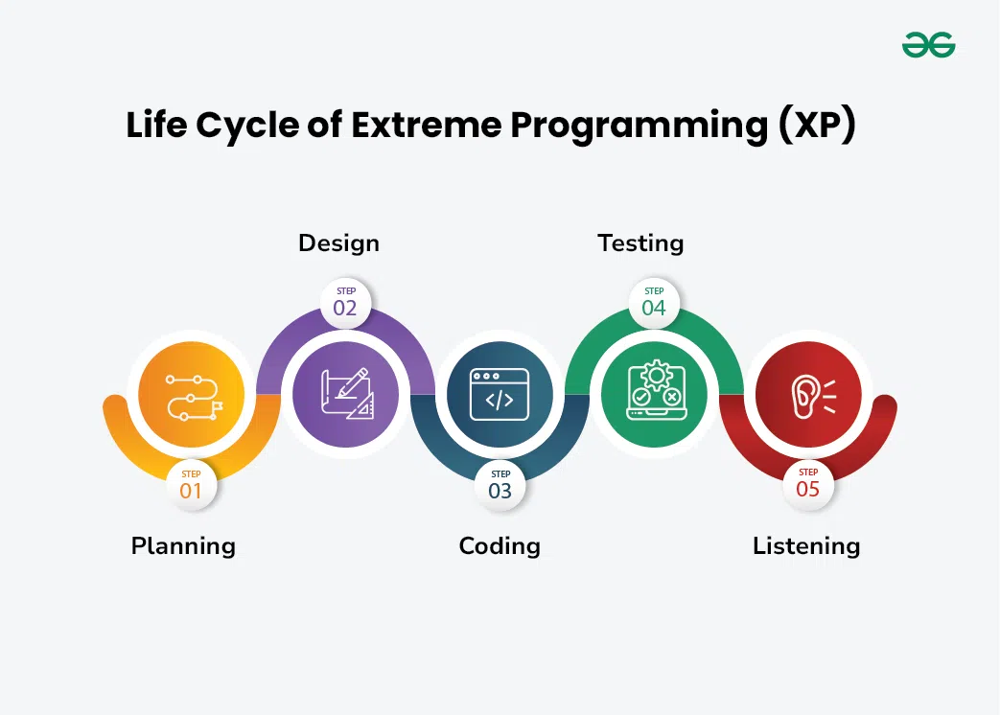

Extreme Programming (XP) on tarkvaraarendusemetoodika, mis keskendub kvaliteetse tarkvara loomisele sagedase ja pideva tagasioside, koostöö
ja adaptatsiooni kaudu. XP rühutab tihedat koostööd arendusmeeskondade, klientide ja huvirühmade vahel, keskendudes kiirele, iteratiivsele arendusele
ja rakendamisele. See SDLC on üks populaarsemaid ja tuntumaid meetodeid. XP projektid algavad kasutajate vestlustega kus tehakse kindlaks mida
kliendid ja kasutajad süsteemist soovivad. Iga vestlus kirjutataks eraldi kaardile, nii et neid saab vabalt rühmitada
XP elutsükkel koosneb 5 etappist: Plaanimine, Disain, Koodimine, Testimine ja Tagasiside.
Plaanimis etapp põhineb kliendi vajaduste kogumisest, töömahu jagamine meeskonna liikmete vahel ning väljalaske planeerimine vastavalt prioriteedile
ja töömahule.
Meeskond loob kasutajate lugude jaoks olulise disaini, kasutades ühist sarnasusi, et luua arusaamine süsteemi üldist arhitektuuri ja hoida disain lihtne
ja selge.
XP toetab paarisprogrameerimist (kaks arendajat koos ühel tööjaamas) kus kirjutatakse enne koodimist teste, et tagada funktsionaalsust algusest peale ja
integreeritakse kood ühisesse hoidlasse koos automatiseeritud testidegaa, et probleemid varakult avastada.
XP põõrab suuremat tähelepanu testimisele, sooritates nii üksikteste (Unit tests) ja vastuvõtuteste (Acceptance tests). Automaatsed üksiktestid kontrollivad
funktsioonid toimivad õigesti ja kliendid sooritavad vastuvõtuteste, mis tagavad süsteemi üldist vastavust esialgsele nõuetele. Pidev testimine tagab tarkvara
kvaliteedi ja vastavuse klientide vajadustele.
Kogutakse klientidelt pidavat tagasisidet, et tagada toote vastavus nende vajadustele ja kohandada seda vastavalt mutustele.

XP toetab seda, et meeskonnaliikmete vahel on avatud ja sagedane suhtlus.
Asjade võimalikult lihtsana hoidmine aitab vähendada keerukust ning muudab koodi mõistlikumaks ja teeb hooduse lihtsamaks.
Pidevad tagasisideahelad on osa testimisest ja klientide osalemisest, mis aitab probleeme arenduse varases etapis avastada.
Meeskonnaliikmeid julgustatakse võtma riske, arutleda probleeme ja kohandeda muutustega, kartmata tagajärgedest.
Iga liikme panust ja arvamust väärtustatakse, mis aitab toetada kollektiivset koostööd teatud rühma liikmete seas.
| HEAD | VEAD |
|---|---|
| Tihe kontakt kliendiga | Täiendav töö |
| Ei ole vaja teha lisatööd programmeerimisel | Klient peab protsessis osalema |
| Stabiilne tarkvara pideva testimise kaudu | Suhteliselt suur ajaline investeering |
| Veakõrvaldamine paarisprogrammeerimise abil | Suhteliselt kõrged kulud |
| Ületunde ei tehta, meeskonnad töötavad oma tempos | Nõuab versioonihaldust |
| Muudatusi võib teha lühikese aja jooksul | Nõuab harjutamiseks enesedistsipliini |
| Kood on alati selge ja arusaadav |